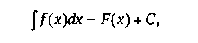
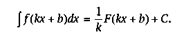
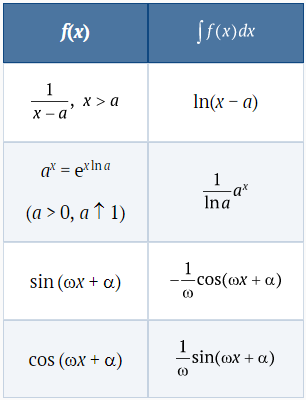
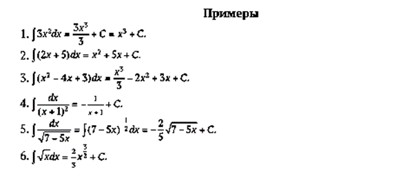
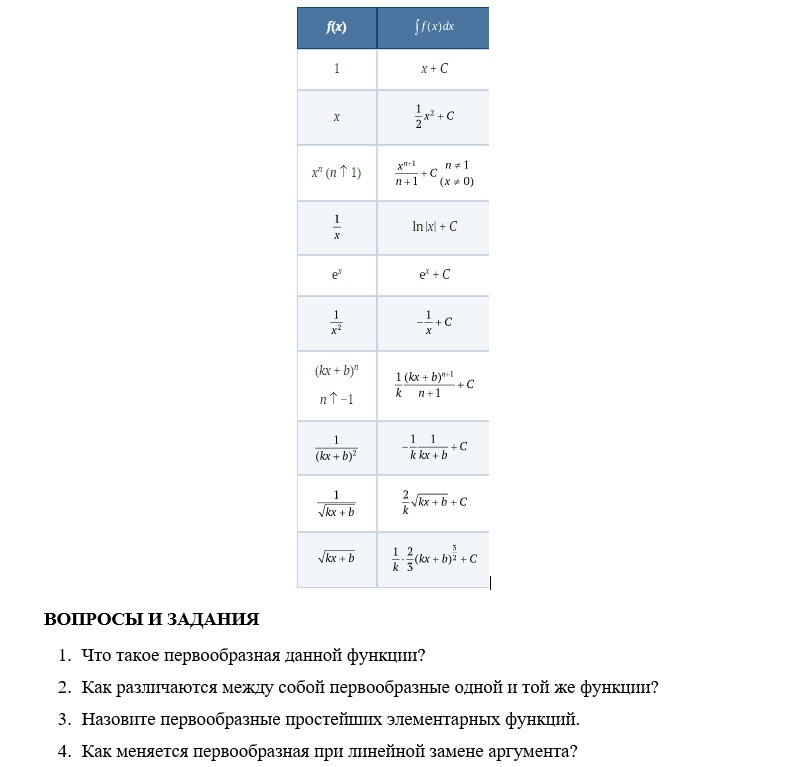

1. Определения.
Интегрирование— операция, обратная дифференцированию
y = f(x)
y = F(x)
F′(x) = f(x)
F(x) — первообразная функции f(x)
С помощью этой операции для функции y = f(x), вычисляется новая функция y = F(x), производная которой равна функции f: F′(x) = f(x). Такая функция F называется первообразной функции f.
Так как производная постоянной функции равна нулю, то ( F + C)′ = F′ + C′= f + 0 = f. Это означает, что если F — одна из первообразных функции f, то и сумма F + C, где C — постоянное число, также будет первообразной f
Задача интегрирования возникает в процессе поиска некоторой функции F при известной ее производной f. Известно, что производная площади S подграфика функции f равна самой функции f. Следовательно, для нахождения S нужно искать первообразную известной функции f
2. Свойства первообразной.
Свойства первообразной — это свойства производной, только переписанные в обратном порядке.
Исключение составляет свойство 2, которое означает, что функция, производная которой тождественно равна нулю, обязательно является константой. Это свойство очевидно, так как с точки зрения механики производная — это скорость. Если скорость тела равна нулю, то тело находится в покое
1. Если F — первообразная функции f, то функция F + C, где C — константа, также является первообразной той же функции f.
2. Обратно, если F1 и F2 — две первообразные одной и той же функции f, то они отличаются на постоянное слагаемое: F1 = F2 + C.
3. Если F и G — первообразные функций f и g, то сумма F + G является первообразной функции f + g.
. Если F — первообразная функции f, то Cf является первообразной функции Cf (C — постоянное число).
Неопределенный интеграл — совокупность всех первообразных F функции f(x), определенных на некотором промежутке.Обозначение:
Итак, согласно определению,

где F(x) — какая-либо первообразная функции f(x); C — произвольная постоянная.
Как вычисляют первообразную?
1. Операция дифференцирования совершается формально — нужно запомнить несколько правил, и их будет достаточно для нахождения производных. Не так обстоит дело с интегрированием: например, нет формулы для интегрирования произведения и частного функций. Поэтому составлены обширные таблицы интегралов (первообразных) и появляется новая задача — научиться преобразовывать вычисляемые интегралы в табличные.
2. Одна и та же функция f имеет бесконечно много первообразных, но все они друг от друга отличаются на константу. Знаком неопределенного интеграла ∫ обозначается какая-либо из первообразных. Отсюда ясно, что всякие равенства с использованием знака ∫ надо понимать с точностью до постоянного слагаемого. Чтобы помнить это, при вычислении первообразных пишут какую-нибудь из них, а затем добавляют постоянную C.
3. Линейная замена переменной. Пусть F — первообразная для функции f. Тогда

Отметим полезные следствия, которые можно внести в таблицу интегралов:

Почему первообразная обозначается с помощью знака интеграла?
Мы не стали подробно объяснять, как и почему записываются и вычисляются интегралы. Но читатель, конечно, обратил внимание на запись первообразной в таблице в виде Эта запись традиционна, и объяснить ее происхождение несложно. Для нахождения первообразной F необходимо знать линейную часть ее приращения, которая называется дифференциалом и обозначается через dF. Дифференциал функции F является линейной функцией от приращения аргумента, т. е. от dx, и записывается в виде dF = kdx, где k и есть производная функции F. Поэтому под знак интеграла ставится не только производная, но и ее произведение на dx. Операция интегрирования в чем-то аналогична операции суммирования, и знак ∫ напоминает букву S, которой обычно обозначают суммы. Подробнее об этом пойдет речь в следующей главе.

Таблица интегралов
